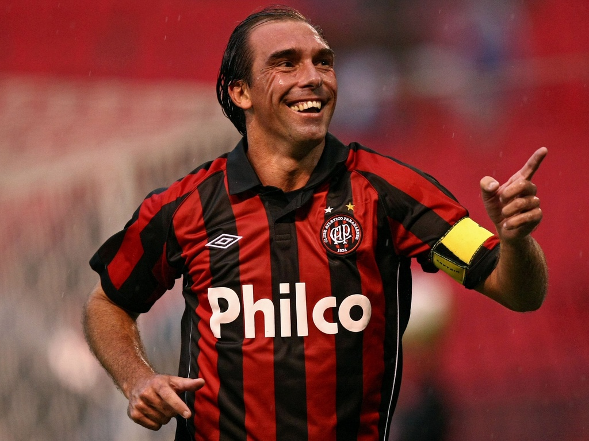
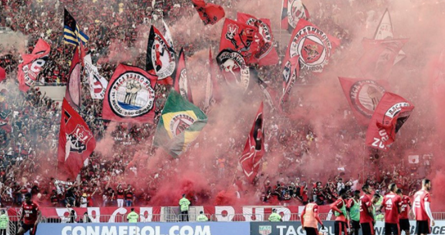
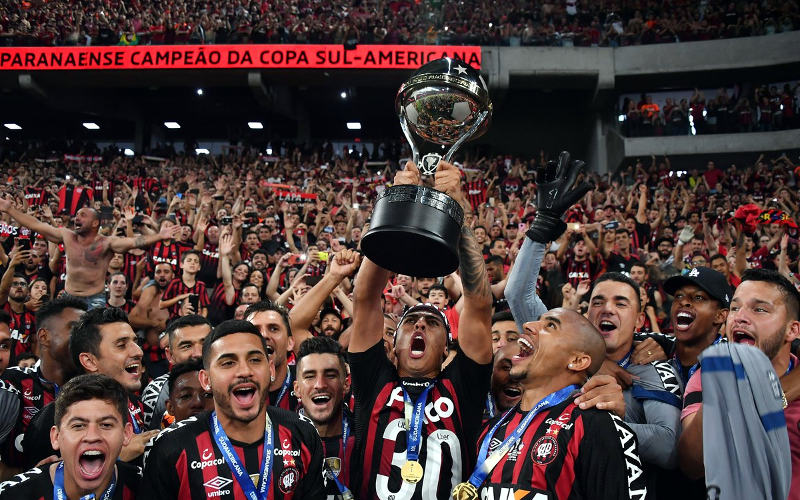

Motivos para torcer pelo Furacão

Paulo Baier: Idolo do time
Paulo Baier, mais conhecido como o melhor batedor de falta da historia, batia falta como nunca, idolo maximo do clube Athletico Paranaense.

Torcida Os Fanaticos
A Torcida Os Fanaticos é quem impulsiona o clube para a vitoria, motivando os jogadores e sacudindo a Baixada a mais de 40 anos.
